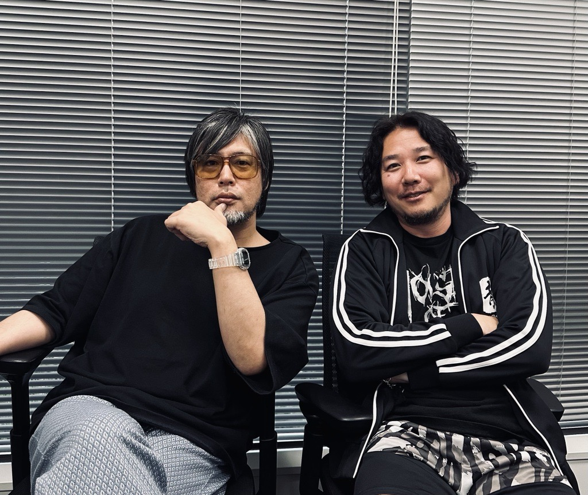

RGG Studios Share Their Thoughts On Developing The Upcoming “Like A Dragon” Titles
The Yakuza series is a popular JRPG series developed by and
published by Sega and RGG Studios. First launched in 2005, it has
now garnered a loyal following. Known for its over-the-top battles,
the series is also widely popular thanks to the numerous references
and memes over the years.
Yakuza, or known as Ryu Ga Gotoku in Japan, are receiving two more
titles in its expansive list of video games, namely “Like a Dragon
Gaiden: The Man Who Erased His Name” as well as “Like a Dragon:
Infinite Wealth”.
Trailers of both of these games have just been released earlier this
month.
With both of these titles releasing later in the year, IGN Southeast Asia had the opportunity to learn more about these games in an interview with the Director of Ryu Ga Gotoku Studio/Executive Producer, Masayoshi Yokoyama, and Yakuza series Chief Producer, Hiroyuki Sakamoto.
It is certainly an exciting time for the RGG Studio and ‘Like a Dragon’ series alike, with so many titles releasing in the near future. How is the current atmosphere within the studio?
The studio is pretty fun at the moment. The atmosphere is pretty
light. As you may know, we did the Ryu Ga Gotoku summit last year as
well as one recently.
In fact, I think the studio really likes having a lot of events and
having that busyness to keep us all energetic and driven. That's
just how the studio is, from my experience. Surprisingly, a lot of
people do end up quitting when we have nothing to do, and that seems
to be kind of like the characteristics of the studio.
So we're going to keep busy, and have lots of fun while we're at it.